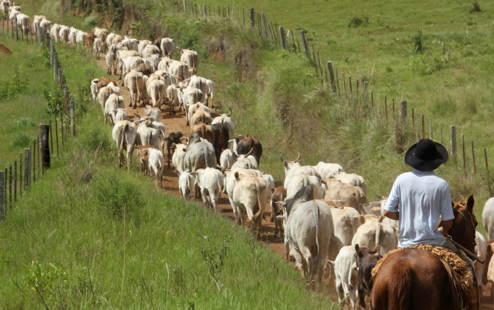

ALMA DE VAQUEIRO
Projeto de Extensão Interprofissional - Multiculturalismo

Bem-vindo ao Alma de Vaqueiro
Este espaço foi criado para valorizar, preservar e compartilhar a rica trajetória do vaqueiro nordestino — figura emblemática da cultura brasileira que, por séculos, tem representado bravura, resistência e sabedoria popular. Aqui, você encontrara ações que reforçam a importância de seu reconhecimento como patrimônio cultural de natureza nacional.
Nosso compromisso é dar visibilidade a essa identidade viva e engajar a sociedade na valorização de uma herança histórica que molda o sertão e inspira o país.
➤ Conheça mais sobre o projeto
➤ Apoie nossa causa